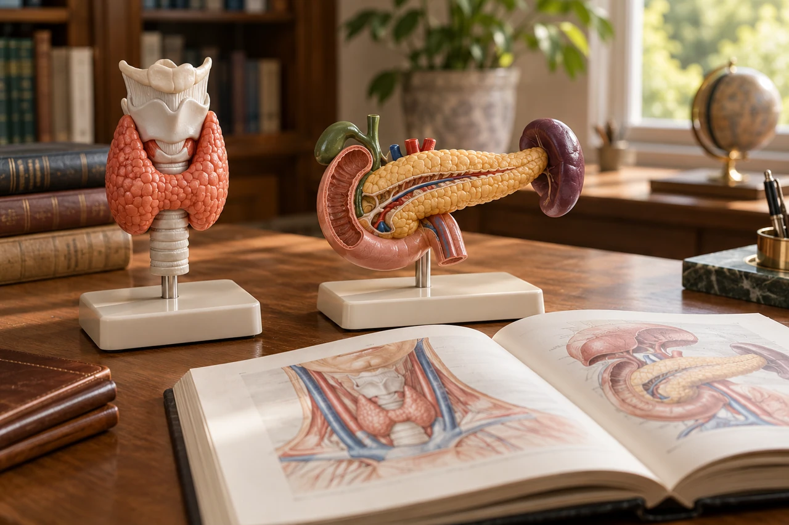

MEDLEX / TERRACOTTA
Endocrine system
 MedLexTHE LANGUAGE OF MEDICINE
MedLexTHE LANGUAGE OF MEDICINE Healthcare Crown Academy
Healthcare Crown AcademyMEDLEX / BATCH 03
Endocrine
system
Learn the words, trace the relationships and explain the clinical meaning with precision.

01 / EXPLORE & APPLY
A word can change the story
Hook • discuss before revealing
Does that mean too much glucose—or too little?
A • Too much
Use the prefix as your clue.
B • Too little
Use the prefix as your clue.
Reveal the meaning
B: hypo- means low or deficient; glyc means glucose; -aemia means a blood condition. Hypoglycaemia means an abnormally low blood glucose level. The word supplies meaning; the clinical record supplies context.
SOURCESNLM / Medical word partsOpenStax / Overview of the endocrine system
02 / EXPLORE & APPLY
Your route through the lesson
Outcomes • recognise → decode → apply
01 • Locate
Identify the main glands and connect each to representative hormones.
02 • Decode
Separate prefixes, roots and suffixes; explain endocrine terms in plain language.
03 • Distinguish
Compare hormone excess, deficiency and resistance; recognise important naming differences.
04 • Apply
Interpret short clinical statements and justify terminology choices.
Success check: explain a term using its parts, then add the clinical meaning that the parts alone cannot provide.
SOURCESNLM / Medical word partsOpenStax / Overview of the endocrine system
03 / EXPLORE & APPLY
Endocrine, exocrine, target cell
Three concepts that unlock the vocabulary
Endocrine
Ductless secretion → surrounding fluid → blood. A hormone acts on cells with appropriate receptors.
Exocrine
Secretion travels through a duct to a surface or lumen. Example: pancreatic digestive secretions.
Target cell
Receptors determine whether a cell responds. A circulating signal does not make every cell respond identically.
The pancreas has both endocrine and exocrine functions.
Source desk
NLM • MedlinePlus / Medical word parts ↗SOURCESNLM / Medical word partsOpenStax / Overview of the endocrine system
04 / EXPLORE & APPLY
The endocrine atlas
Choose a gland • approximate locations, not to scale
Source desk
NLM • MedlinePlus / Medical word parts ↗OpenStax • Betts et al. • 2022 / Anatomy and Physiology 2e, §17.1: Endocrine overview ↗OpenStax • Betts et al. • 2022 / §17.3: Pituitary and hypothalamus ↗OpenStax • Betts et al. • 2022 / §17.4: Thyroid gland ↗OpenStax • Betts et al. • 2022 / §17.5: Parathyroid glands ↗OpenStax • Betts et al. • 2022 / §17.6: Adrenal glands ↗NLM • MedlinePlus / Diabetes: type 1 and type 2 ↗OpenStax • Betts et al. • 2022 / §17.7: Pineal gland ↗SOURCESNLM / Medical word partsOpenStax / Overview of the endocrine system
05 / EXPLORE & APPLY
Negative feedback
Explore the hypothalamic–pituitary–thyroid axis
↑ T3/T4 feed back to reduce TRH and TSH drive
SOURCESNLM / Medical word partsOpenStax / Overview of the endocrine system
06 / EXPLORE & APPLY
A reusable decoding method
Find the suffix → root → prefix → clinical meaning
Hyperglycaemia = abnormally high blood glucose.
Combining form
A root plus combining vowel: aden/o. The vowel joins word parts; it has no meaning by itself.
Do not force a split
Some terms and eponyms need a learned definition: Graves disease, Hashimoto thyroiditis, insulin.
British: glycaemia, goitre, oestrogen. American: glycemia, goiter, estrogen. Both spellings occur in reliable sources.
SOURCESNLM / Medical word partsOpenStax / Overview of the endocrine system
07 / EXPLORE & APPLY
Prefixes and suffixes
Click or tap each card to flip it
SOURCESNLM / Medical word partsOpenStax / Overview of the endocrine system
08 / EXPLORE & APPLY
Roots: name the structure or substance
Keep the combining vowel visible
| Combining form | Meaning | Example |
|---|---|---|
| aden/o | Gland | adenoma |
| thyr/o, thyroid/o | Thyroid gland | thyroiditis |
| adren/o, adrenal/o | Adrenal gland | adrenalectomy |
| pancreat/o | Pancreas | pancreatitis |
| glyc/o, gluc/o | Glucose / sugar | hyperglycaemia |
| acr/o | Extremities | acromegaly |
| somat/o | Body | somatotropin |
| endocrin/o | Endocrine glands / secretion | endocrinology |
A term can belong to more than one body system: pancreatitis is inflammation of the pancreas, not automatically an endocrine hormone disorder.
SOURCESNLM / Medical word partsOpenStax / Overview of the endocrine system
09 / EXPLORE & APPLY
Word laboratory
Combine parts, then explain the completed word
Why not “hyperglyco-aemia”?
A combining vowel is commonly dropped before a suffix that starts with a vowel. Learn the recognised spelling of the full word rather than joining every combining form mechanically.
SOURCESNLM / Medical word partsOpenStax / Overview of the endocrine system
10 / EXPLORE & APPLY
Pituitary and hypothalamus
Production and release are different actions
Anterior pituitary
GH: growth hormone • ACTH: adrenocorticotropic hormone • TSH: thyroid-stimulating hormone • prolactin • FSH and LH.
Posterior pituitary
Stores and releases vasopressin (ADH/AVP) and oxytocin. These hormones are synthesised in the hypothalamus.
Hypophysis = pituitary gland. Hypopituitarism = deficiency of one or more pituitary hormones.
Explain “master gland” carefully
The pituitary regulates several endocrine glands, but it is itself regulated by hypothalamic signals and feedback. Pancreatic islets and parathyroids are not chiefly controlled by pituitary tropic hormones.
SOURCESNLM / Medical word partsOpenStax / Overview of the endocrine system
11 / EXPLORE & APPLY
Growth hormone terminology
Timing changes the clinical name
Acromegaly
GH excess after growth plates have closed. Hands, feet and facial tissues may enlarge. IGF-1 mediates many GH effects.
Gigantism
GH excess before growth plates close, with excessive linear growth.
The literal word parts help recall the term; they do not describe every systemic effect of the disease.
Source desk
NIH • NIDDK / Cushing’s syndrome ↗SOURCESNLM / Medical word partsOpenStax / Overview of the endocrine system
12 / EXPLORE & APPLY
Thyroid: structure and function
Enlargement does not specify hormone output
Thyroid hormones
T4 = thyroxine; T3 = triiodothyronine. They influence metabolic activity and support growth and development.
Goitre / goiter
An enlarged thyroid. It may occur with normal, low or high thyroid function.
Thyroiditis
Inflammation of the thyroid. Hormone patterns vary with cause and disease stage.
Decode “euthyroid”
Eu- means normal; euthyroid describes normal thyroid function.
SOURCESNLM / Medical word partsOpenStax / Overview of the endocrine system
13 / EXPLORE & APPLY
Hypothyroidism and hyperthyroidism
Compare the functional meaning first
| Hypothyroidism | Hyperthyroidism | |
|---|---|---|
| Core meaning | Insufficient thyroid hormone effect | Excess hormone production by the thyroid |
| Possible clues | Cold intolerance, constipation, tiredness | Heat intolerance, tremor, palpitations |
| Common autoimmune example | Hashimoto disease | Graves disease |
| Typical primary pattern | Low free T4; high TSH in overt disease | High free T4 and/or T3; low TSH in overt disease |
Thyrotoxicosis means excess thyroid hormone action, whatever the source. Hyperthyroidism is one cause.
Symptoms overlap with other conditions. Subclinical and central disease have different laboratory patterns.
SOURCESNLM / Medical word partsOpenStax / Overview of the endocrine system
14 / EXPLORE & APPLY
Parathyroids and calcium
Similar names • different glands
Parathyroid hormone • PTH
Typically four small glands behind the thyroid. PTH raises blood calcium through actions involving bone, kidneys and active vitamin D.
Hyperparathyroidism
Excess PTH activity. Primary disease commonly produces hypercalcaemia; secondary disease may have normal or low calcium.
Hypoparathyroidism
Insufficient PTH activity, which can cause hypocalcaemia.
Hypercalcaemia / hypercalcemia = high blood calcium. Hypocalcaemia / hypocalcemia = low blood calcium.
SOURCESNLM / Medical word partsOpenStax / Overview of the endocrine system
15 / EXPLORE & APPLY
Adrenals: cortex and medulla
Two regions with different hormone families
Cortisol • aldosterone • adrenal androgens
Adrenaline (epinephrine)
Noradrenaline (norepinephrine)
Cortic/o = cortex
Cortisol supports stress responses and metabolism.
Mineralocorticoid
Aldosterone promotes sodium retention and potassium excretion, helping regulate blood volume.
Simplified region diagram • not to scale
SOURCESNLM / Medical word partsOpenStax / Overview of the endocrine system
16 / EXPLORE & APPLY
Cushing syndrome and Addison disease
Name the scope of the condition
Cushing syndrome
Prolonged excess cortisol exposure; possible causes include glucocorticoid medicines and endogenous overproduction.
Cushing disease
A specific cause of Cushing syndrome: an ACTH-secreting pituitary tumour.
Addison disease
Primary adrenal insufficiency. Cortisol is deficient, and aldosterone is often deficient.
Secondary adrenal insufficiency arises from inadequate pituitary ACTH. It is not called Addison disease.
SOURCESNLM / Medical word partsOpenStax / Overview of the endocrine system
17 / EXPLORE & APPLY
The endocrine pancreas
Opposing signals help regulate glucose
Beta cells → insulin
Promotes glucose uptake in muscle and adipose tissue; supports storage and reduces hepatic glucose output.
Alpha cells → glucagon
Promotes hepatic glucose release, helping raise blood glucose during fasting.
Somatostatin from pancreatic delta cells helps modulate islet hormone secretion.
SOURCESNLM / Medical word partsOpenStax / Overview of the endocrine system
18 / EXPLORE & APPLY
Diabetes mellitus vocabulary
Separate the condition from its manifestations
Type 1 diabetes
Autoimmune beta-cell destruction usually causes severe insulin deficiency.
Type 2 diabetes
Insulin resistance with inadequate insulin secretion relative to the body’s needs.
| Term | Clinical meaning |
|---|---|
| Hyperglycaemia | Abnormally high blood glucose |
| Polyuria | Excessive urine volume |
| Polydipsia | Excessive thirst |
| Glycosuria / glucosuria | Glucose in urine |
| Diabetic ketoacidosis • DKA | Acute metabolic complication involving ketones and acidosis |
These findings do not all occur in every patient. DKA is not synonymous with hyperglycaemia.
SOURCESNLM / Medical word partsOpenStax / Overview of the endocrine system
19 / EXPLORE & APPLY
A terminology update: AVP-D and AVP-R
Recognise both current and legacy names
| Recommended name | Legacy name | Core mechanism |
|---|---|---|
| Arginine vasopressin deficiency • AVP-D | Central diabetes insipidus | Insufficient vasopressin |
| Arginine vasopressin resistance • AVP-R | Nephrogenic diabetes insipidus | Kidneys respond inadequately to vasopressin |
These are water-balance disorders. They are distinct from diabetes mellitus, despite shared features such as polyuria and thirst.
The 2022 international position statement recommended the new names. Legacy terminology remains in many records and resources.
SOURCESNLM / Medical word partsOpenStax / Overview of the endocrine system
20 / EXPLORE & APPLY
Reproductive and pineal vocabulary
Connect the gland, signal and term
Ovaries • oophor/o
Oestrogens and progesterone help regulate reproductive function. Oophorectomy = surgical removal of an ovary.
Testes • orchid/o
Testosterone supports reproductive function and secondary sexual characteristics. Orchiectomy = surgical removal of a testis.
Pineal gland
Melatonin contributes to circadian timing. Its secretion relates to the light–dark cycle.
FSH = follicle-stimulating hormone. LH = luteinising hormone. Both are anterior pituitary gonadotropins.
SOURCESNLM / Medical word partsOpenStax / Overview of the endocrine system
21 / EXPLORE & APPLY
Tests and procedures
Know what the term measures or describes
| Term | Meaning / purpose |
|---|---|
| TSH + free T4 | Biochemical assessment of thyroid function; interpreted together in context |
| HbA1c / A1C | Glycated haemoglobin; estimates average glycaemia over about 3 months |
| Fasting plasma glucose • FPG | Plasma glucose measured after fasting |
| Oral glucose tolerance test • OGTT | Glucose response following a standard oral glucose load |
| Thyroidectomy | Surgical removal of part or all of the thyroid |
| Adrenalectomy | Surgical removal of an adrenal gland |
A1C can be misleading in some haemoglobin variants or altered red-cell turnover. Diagnostic thresholds and treatment protocols are beyond this terminology lesson.
SOURCESNLM / Medical word partsOpenStax / Overview of the endocrine system
22 / EXPLORE & APPLY
Clinical language studio
Read the record • translate the term • justify it
An untreated patient has cold intolerance, constipation, low free T4 and raised TSH.
Name the pattern and decode the term
This is a typical pattern of overt primary hypothyroidism: hypo- = deficient, thyroid = thyroid gland, -ism = condition. The thyroid is underproducing hormone despite raised pituitary stimulation.
A chart documents an ACTH-secreting pituitary tumour causing excess cortisol.
Choose the most specific name
Cushing disease. It is also Cushing syndrome, but “disease” identifies this pituitary cause.
SOURCESNLM / Medical word partsOpenStax / Overview of the endocrine system
23 / EXPLORE & APPLY
Common terminology traps
Make the distinction before using the label
Goitre ≠ hyperthyroidism
One describes size; the other describes excess hormone production.
Adenoma ≠ carcinoma
An adenoma is a benign glandular epithelial tumour. Carcinoma is malignant.
Symptoms ≠ diagnosis
Polyuria is a symptom description; it does not identify its cause.
Hormone ≠ gland
ACTH comes from the pituitary and acts on the adrenal cortex.
Medical word parts are clues. Confirm the accepted definition, site and clinical context.
SOURCESNLM / Medical word partsOpenStax / Overview of the endocrine system
24 / EXPLORE & APPLY
Knowledge check
Six questions • choose before revealing feedback
SOURCESNLM / Medical word partsOpenStax / Overview of the endocrine system
25 / EXPLORE & APPLY
Retrieval cards
Say the answer aloud before flipping
SOURCESNLM / Medical word partsOpenStax / Overview of the endocrine system
26 / EXPLORE & APPLY
Your exit task
Define it • distinguish it • explain it
01 • Decode
Write a plain-language definition of hyperglycaemia.
02 • Distinguish
Explain why an enlarged thyroid does not prove hyperthyroidism.
03 • Apply
A record says “central diabetes insipidus”. Give its recommended newer name.
Model responses
1: Abnormally high blood glucose. 2: Goitre describes enlargement; function may be normal, low or high. 3: Arginine vasopressin deficiency (AVP-D).
Review plan: recall five terms tomorrow, explain two distinctions in three days, and repeat the cases in one week.
SOURCESNLM / Medical word partsOpenStax / Overview of the endocrine system
27 / EXPLORE & APPLY
Sources and further reading
Live links • source-to-slide citations • accessed 19 October 2026
Anatomy and Physiology 2e, §17.1: Endocrine overview ↗
Adrenal insufficiency & Addison’s disease ↗
[14] International endocrine working group • 2022
Changing the name of diabetes insipidus • DOI: 10.1530/EC-22-0378 ↗
§17.8: Gonadal and placental hormones ↗
Original lesson wording and interactive diagrams. Generated 3D cover artwork is conceptual. Sources support the teaching content; no claim of source endorsement. The supplied MedLex module could not be retrieved and was not used as evidence.
Source desk
[1] NLM • MedlinePlus Medical word parts ↗ ↗[2] OpenStax • Betts et al. • 2022 Anatomy and Physiology 2e, §17.1: Endocrine overview ↗ ↗[3] OpenStax • Betts et al. • 2022 §17.3: Pituitary and hypothalamus ↗ ↗[4] OpenStax • Betts et al. • 2022 §17.4: Thyroid gland ↗ ↗[5] OpenStax • Betts et al. • 2022 §17.5: Parathyroid glands ↗ ↗[6] OpenStax • Betts et al. • 2022 §17.6: Adrenal glands ↗ ↗[7] OpenStax • Betts et al. • 2022 §17.9: Endocrine pancreas ↗ ↗[8] NIH • NIDDK Hypothyroidism ↗ ↗[9] NIH • NIDDK Hyperthyroidism ↗ ↗[10] NIH • NIDDK Cushing’s syndrome ↗ ↗[11] NIH • NIDDK Acromegaly ↗ ↗[12] NIH • NIDDK Adrenal insufficiency & Addison’s disease ↗ ↗[13] NIH • NIDDK Diabetes tests & diagnosis ↗ ↗[14] International endocrine working group • 2022 Changing the name of diabetes insipidus • DOI: 10.1530/EC-22-0378 ↗ ↗[15] NLM • MedlinePlus Diabetes: type 1 and type 2 ↗ ↗[16] OpenStax • Betts et al. • 2022 §17.7: Pineal gland ↗ ↗[17] OpenStax • Betts et al. • 2022 §17.8: Gonadal and placental hormones ↗ ↗Teaching imagery combines generated raster artwork and symbols from the supplied Health Icons asset packs. Models and scenes are conceptual teaching aids. They are not diagnostic diagrams or patient images. Source desks retain attribution to OpenStax, Open RN and the clinical publishers used in the original lessons. No source endorsement is implied.
SOURCESNLM / Medical word partsOpenStax / Overview of the endocrine system